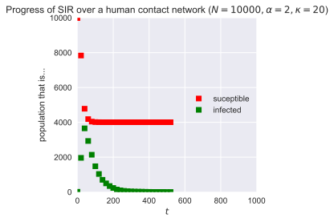

Vaccination¶
import numpy
import networkx
import epyc
import epydemic
import pandas
import mpmath
import matplotlib
%matplotlib inline
%config InlineBackend.figure_format = 'svg'
import matplotlib.pyplot as plt
import seaborn
matplotlib.style.use('seaborn')
class MonitoredSIR(epydemic.SIR, epydemic.Monitor):
def __init__(self):
super(MonitoredSIR, self).__init__()
def build(self, params):
'''Build the observation process.
:param params: the experimental parameters'''
super(MonitoredSIR, self).build(params)
# also monitor other compartments
self.trackNodesInCompartment(epydemic.SIR.SUSCEPTIBLE)
self.trackNodesInCompartment(epydemic.SIR.REMOVED)
class PLCNetworkDynamics(epydemic.StochasticDynamics):
# Experimental paramerters
N = 'N'
ALPHA = 'alpha'
CUTOFF = 'cutoff'
def __init__(self, p):
super(PLCNetworkDynamics, self).__init__(p)
def makePowerlawWithCutoff(self, alpha, cutoff):
C = mpmath.polylog(alpha, numpy.exp(-1.0 / cutoff))
def p(k):
return (pow((k + 0.0), -alpha) * numpy.exp(-(k + 0.0) / cutoff)) / C
return p
def generatePLC(self, N, alpha, cutoff, maxdeg=100):
p = self.makePowerlawWithCutoff(alpha, cutoff)
rng = numpy.random.default_rng()
ns = []
t = 0
for i in range(N):
while True:
k = rng.integers(1, maxdeg)
if numpy.random.random() < p(k):
ns.append(k)
t += k
break
while t % 2 != 0:
i = rng.integers(0, len(ns) - 1)
t -= ns[i]
del ns[i]
while True:
k = rng.integers(1, maxdeg)
if numpy.random.random() < p(k):
ns.append(k)
t += k
break
return networkx.configuration_model(ns, create_using=networkx.Graph())
def configure(self, params):
super(PLCNetworkDynamics, self).configure(params)
# build a random powerlaw-with-cutoff network with the given parameters
N = params[self.N]
alpha = params[self.ALPHA]
cutoff = params[self.CUTOFF]
g = self.generatePLC(N, alpha, cutoff)
self.setNetworkPrototype(g)
# network parameters
N = 10000
alpha = 2
cutoff = 20
# simulation time
T = 1000
# disease dynamic parameters
pInfected = 0.001
pInfect = 0.1
pRemove = 0.02
param = dict()
param[epydemic.SIR.P_INFECTED] = pInfected
param[epydemic.SIR.P_INFECT] = pInfect
param[epydemic.SIR.P_REMOVE] = pRemove
param[PLCNetworkDynamics.N] = N
param[PLCNetworkDynamics.ALPHA] = alpha
param[PLCNetworkDynamics.CUTOFF] = cutoff
param[epydemic.Monitor.DELTA] = T / 50 # take 50 samples
m = MonitoredSIR()
e = PLCNetworkDynamics(m)
rc = e.set(param).run()
fig = plt.figure(figsize=(4, 4))
ax = fig.gca()
results = e.experimentalResults()[MonitoredSIR.TIMESERIES]
ts = results[MonitoredSIR.OBSERVATIONS]
sss = results[epydemic.SIR.SUSCEPTIBLE]
iss = results[epydemic.SIR.INFECTED]
rss = results[epydemic.SIR.REMOVED]
ax.plot(ts, sss, 'rs', label='suceptible')
ax.plot(ts, iss, 'gs', label='infected')
#ax.plot(ts, rss, 'ks', label='removed')
ax.set_title('Progress of SIR over a human contact network ($N = {n}, \\alpha = {a}, \\kappa = {k}$)'.format(n=N, a=alpha, k=cutoff))
ax.set_xlim([0, T])
ax.set_xlabel('$t$')
ax.set_ylim([0, N])
ax.set_ylabel('population that is...')
ax.legend(loc='center right')
plt.show()
